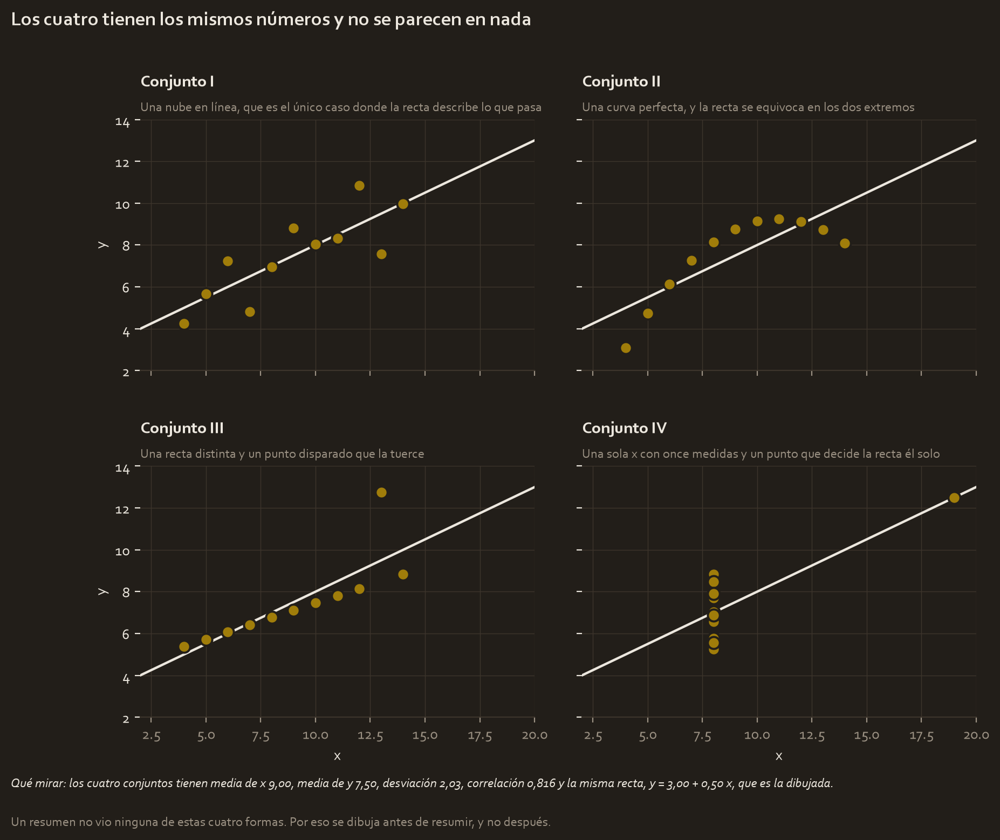
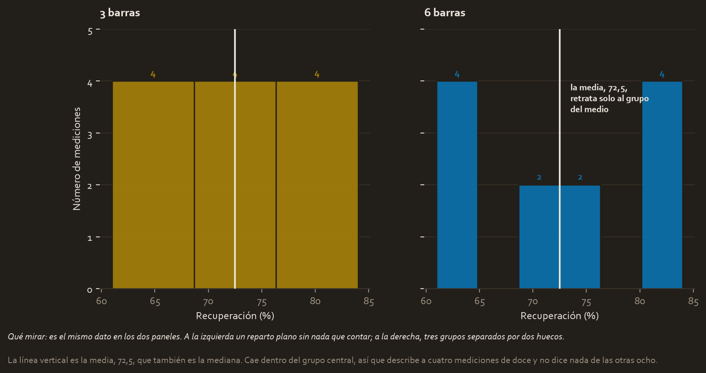

Qué resuelve este módulo
Los tres módulos anteriores iban de encontrar lo que hay en los datos. Este va de la parte que decide si alguien hace algo con ello: enseñarlo.
Y empieza por un argumento que no admite discusión. Se pueden construir conjuntos de datos que coinciden en todos los números que uno calcularía por costumbre, y que al dibujarlos resultan ser cosas completamente distintas. No es un caso raro de laboratorio: es la demostración de que el resumen y el dibujo ven cosas diferentes, y de que el dibujo ve más.
Antes de la teoría: un ejemplo de juguete
Cuatro conjuntos de once puntos cada uno, con sus x y sus y. Se llaman I, II, III y IV.
Paso 1. Los resúmenes de los cuatro
| Conjunto | Media de x | Media de y | Desviación de y | Correlación | Recta |
|---|---|---|---|---|---|
| I | 9,00 | 7,50 | 2,03 | 0,816 | y = 3,00 + 0,50 x |
| II | 9,00 | 7,50 | 2,03 | 0,816 | y = 3,00 + 0,50 x |
| III | 9,00 | 7,50 | 2,03 | 0,816 | y = 3,00 + 0,50 x |
| IV | 9,00 | 7,50 | 2,03 | 0,817 | y = 3,00 + 0,50 x |
Las cuatro filas son la misma fila. Cualquier informe que resuma estos conjuntos con media, desviación, correlación y recta ajustada dirá que los cuatro son intercambiables.
Paso 2. Y ahora se dibujan

| Conjunto | Qué es en realidad |
|---|---|
| I | Una nube alrededor de la recta. El único donde el resumen no miente |
| II | Una curva perfecta. La recta se equivoca por arriba en el centro y por abajo en los extremos |
| III | Once puntos en una recta distinta, y uno disparado que tuerce la que se ajusta |
| IV | Diez medidas en la misma x y un solo punto que decide la recta él solo |
Paso 3. Qué significa cada caso
Los tres últimos son tres formas distintas de que un resumen mienta, y las tres se dan en datos de verdad:
- El II es una relación curva resumida con una recta. La correlación de 0,816 suena fuerte y el modelo se equivocará sistemáticamente en los extremos, que es justo donde uno suele querer predecir.
- El III es el atípico del módulo anterior. Sin él, los diez puntos restantes están casi sobre una recta perfecta y con otra pendiente. Un dato de once decide el resultado.
- El IV es peor: sin ese punto único a la derecha no habría relación ninguna que medir, porque todos los demás comparten la misma x. **La correlación entera descansa en una sola observación.**
Y por eso el módulo empieza aquí:
Si no lo has dibujado, no lo has mirado.
Glosario
- Ciclo de vida de la visualización. Que un gráfico se planifica, se prototipa, se revisa y se refina. El primero que sale casi nunca es el que se presenta.
- Gráfico exploratorio. El que haces para ti mismo mientras analizas. Feo, rápido y muchos.
- Gráfico explicativo. El que haces para quien va a decidir. Uno solo, limpio, con el hallazgo escrito encima.
- Tableau. Herramienta de ventana para construir gráficos y paneles arrastrando campos. Es la que enseña este módulo.
- Tableau Public. La versión gratuita. Publica en un perfil web abierto, así que no se sube nada confidencial.
- Dimensión. En Tableau, un campo categórico o de fecha: lo que corta los datos.
- Medida. Un campo numérico que se agrega: lo que se cuenta o se suma.
- Panel de control. Varias visualizaciones juntas en una vista. En inglés, dashboard.
- Filtro. Restringe qué datos entran en la vista.
- Relato con datos. Contar el hallazgo con estructura: contexto, conflicto y resolución.
- Accesibilidad. Que el gráfico se entienda en blanco y negro, con daltonismo y a tamaño pequeño.
Paso a paso
Paso 1. Dibujar antes de resumir, y varias veces
Es la conclusión del cuarteto y se aplica siempre, no solo cuando hay sospechas. Con una variable numérica, el mínimo son dos dibujos: un histograma para ver la forma y un diagrama de dispersión contra lo que te interese, para ver la relación.
Y el módulo 2 ya avisó de lo suyo: el histograma se dibuja con varios cortes, porque el número de barras cambia lo que parece decir.

Paso 2. Elegir el gráfico según la pregunta
No hay muchos casos y casi todos los errores son de esta tabla:
| La pregunta | El gráfico |
|---|---|
| ¿Cómo se reparten los valores de una variable? | Histograma |
| ¿Cómo se relacionan dos variables numéricas? | Diagrama de dispersión |
| ¿Cuánto tiene cada categoría? | Barras |
| ¿Cómo evoluciona en el tiempo? | Líneas |
| ¿Cómo se comparan los repartos de varios grupos? | Un histograma por grupo, con los mismos ejes |
| ¿Cuánto vale una parte del total? | Barras, casi siempre mejor que un sector circular |
El sector circular merece su frase: el ojo compara longitudes mucho mejor que ángulos, así que con más de tres categorías o con valores parecidos, unas barras se leen mejor.
Paso 3. Las reglas que hacen un gráfico honesto
| Regla | Por qué |
|---|---|
| El eje de las barras empieza en cero | Recortarlo exagera diferencias pequeñas |
| Mismos ejes al comparar grupos | Escalas distintas hacen que cosas distintas parezcan iguales |
| Escala logarítmica si el dato abarca órdenes de magnitud | Si no, todo se apelotona contra el eje |
| Los ejes se etiquetan con sus unidades | Un número sin unidad no es un dato |
| El color no puede ser el único portador del significado | Daltonismo y blanco y negro |
| Escribe en el gráfico qué hay que mirar | Si hace falta un párrafo aparte, no está terminado |
La última es la que más se salta y la que más rinde. Un título que diga "Recuperación por turno" describe los ejes; uno que diga "El turno de noche recupera cuatro puntos menos" dice el hallazgo.
Paso 4. El ciclo de vida, que explica por qué el primero nunca vale
Un gráfico se planifica, se prototipa, se revisa y se refina. En la práctica:
- Planificar. Qué pregunta responde y quién lo va a mirar.
- Prototipar. Rápido y feo, para ver si el dato dice lo que crees.
- Revisar. Enseñárselo a alguien que no ha estado en el análisis y ver qué entiende.
- Refinar. Quitar todo lo que no ayude, y solo entonces cuidar el aspecto.
El paso 3 es el que la gente se salta, y es el que descubre que el gráfico que llevas dos horas puliendo se entiende al revés.
Paso 5. Tableau, y qué se hace con él
Tableau construye gráficos y paneles arrastrando campos, sin escribir código. La distinción que hay que entender es la que organiza toda la herramienta:
- Las dimensiones cortan los datos: turno, mineral, mes.
- Las medidas se agregan: recuperación, tonelaje, número de lotes.
Y una advertencia práctica: Tableau Public publica en un perfil web abierto. Sirve para portafolio y no sirve para datos de empresa.
Esta parte hay que hacerla en Tableau, no aquí. Es una herramienta de ventana y se aprende usándola. Lo que se puede hacer en Python, y es lo que hacen los proyectos de este curso, es el equivalente en gráficos: las mismas decisiones, distinto botón.
Paso 6. Los datasets que hay que descargar para practicar
El módulo pide bajarse sus conjuntos de datos y empezar a construir con ellos. Son los registros de descargas eléctricas de la NOAA, con tres columnas que van directas a un mapa: la fecha, las coordenadas y el número de rayos.
| Archivo | Qué trae | Tamaño |
|---|---|---|
tableau_dataset.csv | Un año de descargas con longitud y latitud | 302 MB |
tableau_main_2009_to_2018.csv | Diez años, con coordenadas x e y | 372 MB |
Ya los tienes descargados, en tu carpeta de material del curso. Y son grandes, lo cual trae dos consecuencias prácticas que conviene saber antes de abrirlos:
- En Tableau se pueden usar tal cual, porque está pensado para eso.
- En Python conviene leerlos una vez, agregar y guardar el resumen. Un archivo de 300 MB tarda en cargar cada vez que ejecutas el cuaderno, y lo que se dibuja al final son unos cientos de filas agregadas por mes o por celda del mapa.
Ese es exactamente el camino que sigue el proyecto de este curso: leer una vez, agregar, y dibujar desde un resumen de unos pocos kilobytes.
El código, por partes
Paso 1. Comprobar que los cuatro conjuntos dan los mismos números
import numpy as np
import pandas as pd
from scipy import stats
shared_x = [10, 8, 13, 9, 11, 14, 6, 4, 12, 7, 5]
quartet = pd.DataFrame({
"x1": shared_x,
"y1": [8.04, 6.95, 7.58, 8.81, 8.33, 9.96, 7.24, 4.26, 10.84, 4.82, 5.68],
"x2": shared_x,
"y2": [9.14, 8.14, 8.74, 8.77, 9.26, 8.10, 6.13, 3.10, 9.13, 7.26, 4.74],
"x3": shared_x,
"y3": [7.46, 6.77, 12.74, 7.11, 7.81, 8.84, 6.08, 5.39, 8.15, 6.42, 5.73],
"x4": [8, 8, 8, 8, 8, 8, 8, 19, 8, 8, 8],
"y4": [6.58, 5.76, 7.71, 8.84, 8.47, 7.04, 5.25, 12.50, 5.56, 7.91, 6.89],
})
rows = []
for n in (1, 2, 3, 4):
x, y = quartet[f"x{n}"], quartet[f"y{n}"]
fit = stats.linregress(x, y)
rows.append({"conjunto": n, "media x": x.mean(), "media y": round(y.mean(), 2),
"desv y": round(y.std(ddof=1), 2),
"correlacion": round(fit.rvalue, 3),
"pendiente": round(fit.slope, 3),
"intercepto": round(fit.intercept, 2)})
print(pd.DataFrame(rows).to_string(index=False))shared_x = [...]- Tres de los cuatro conjuntos comparten las mismas x, así que se escriben una vez y se reutilizan. El cuarto tiene las suyas, que son casi todas iguales entre sí.
f"x{n}"- Una f-string para construir el nombre de la columna dentro del bucle: en la primera vuelta vale "x1", en la segunda "x2". Es la forma de recorrer columnas que se llaman igual con un número al final.
y.std(ddof=1)- La desviación de una muestra, dividiendo entre n − 1. Sin
ddof=1numpy divide entre n, que es la desviación de una población, y da un número distinto. rows.append({...})- Se van acumulando diccionarios en una lista y al final se convierten en tabla de una vez. Es más rápido y más legible que ir añadiendo filas a un DataFrame.
pd.DataFrame(rows)- Una lista de diccionarios se convierte en tabla directamente: cada diccionario es una fila y sus claves son las columnas.
conjunto media x media y desv y correlacion pendiente intercepto
1 9.0 7.5 2.03 0.816 0.5 3.0
2 9.0 7.5 2.03 0.816 0.5 3.0
3 9.0 7.5 2.03 0.816 0.5 3.0
4 9.0 7.5 2.03 0.817 0.5 3.0Seis columnas de números y las cuatro filas coinciden, salvo un 0,817 en la última correlación. Ningún informe construido con esta tabla distinguiría los cuatro conjuntos.
Paso 2. Dibujarlos, que es lo único que los distingue
import matplotlib.pyplot as plt
fig, axes = plt.subplots(2, 2, figsize=(9, 7), sharex=True, sharey=True)
for ax, n in zip(axes.flat, (1, 2, 3, 4)):
x, y = quartet[f"x{n}"], quartet[f"y{n}"]
fit = stats.linregress(x, y)
span = np.array([2, 20])
ax.plot(span, fit.intercept + fit.slope * span, linewidth=1.6)
ax.plot(x, y, "o", markersize=8)
ax.set_title(f"Conjunto {n}", loc="left")
fig.savefig("anscombe.png", dpi=200, bbox_inches="tight")plt.subplots(2, 2)- Crea una rejilla de dos por dos y devuelve la figura y una matriz de ejes. Cada eje es un panel independiente.
sharex=True, sharey=True- Los cuatro paneles comparten los dos ejes. Es obligatorio al comparar: con escalas distintas, cuatro formas diferentes pueden parecer la misma.
axes.flat- Recorre la rejilla como si fuera una lista de cuatro, sin tener que escribir dos bucles anidados.
zip(axes.flat, (1, 2, 3, 4))- Empareja cada panel con su número de conjunto, para recorrer las dos cosas a la vez.
span = np.array([2, 20])- Solo dos puntos: una recta queda definida con su principio y su final, no hace falta calcular valores intermedios.
"o"- El estilo de marca: puntos sueltos sin línea que los una.
bbox_inches="tight"- Recorta el margen sobrante al guardar. Sin esto, las etiquetas de los ejes salen cortadas a menudo.
(no imprime nada: escribe el archivo anscombe.png)
La figura de arriba está hecha con esta misma receta, con la paleta del proyecto y las anotaciones que dicen qué mirar en cada panel.
Ojo
- Los cuatro conjuntos del cuarteto tienen los mismos números. Si tu informe se apoya solo en media, desviación y correlación, no distingue una recta de una curva.
- Una correlación de 0,816 no significa que la recta sirva. En el conjunto II la relación es curva y la recta se equivoca sistemáticamente en los extremos.
- Un solo punto puede decidir el resultado. En el III tuerce la recta y en el IV es la única razón de que exista correlación.
- Al comparar grupos, los mismos ejes. Escalas distintas hacen que cosas distintas parezcan iguales, que es el error de diseño más frecuente.
- El eje de un gráfico de barras empieza en cero. Recortarlo convierte una diferencia del 2 % en una montaña.
- El primer gráfico no es el que se presenta. Prototipar, enseñárselo a alguien de fuera y refinar.
- Tableau Public es público. No se suben datos de empresa a un perfil abierto.
- Un título que describe los ejes desaprovecha el mejor sitio del gráfico. Ahí va el hallazgo.
- El color no puede ser el único portador del significado, o el gráfico deja de funcionar en blanco y negro y para quien no distingue rojo y verde.
Puente metalúrgico
El cuarteto de Anscombe tiene un equivalente exacto en planta, y es la razón por la que nadie de proceso acepta un promedio sin ver la curva: la curva ley-recuperación.
Dos circuitos pueden entregar la misma recuperación media y la misma ley media de concentrado, y tener curvas completamente distintas. Uno puede estar operando en la zona plana, donde apretar la ley cuesta poco, y el otro en la caída, donde cada punto de ley se paga con varios de recuperación. El promedio no distingue esos dos casos y decide cosas opuestas.
| En el cuarteto | En la planta |
|---|---|
| Conjunto I, la nube en línea | Un circuito estable, donde el promedio describe bien |
| Conjunto II, la curva | La zona de caída de la curva ley-recuperación |
| Conjunto III, el punto disparado | La campaña con un lote anómalo que arrastra el mes |
| Conjunto IV, una sola x | El ensayo con una sola condición probada y un punto suelto |
Y el ciclo de vida del gráfico también lo reconoces: el gráfico que va al comité no es el que hiciste para entenderlo tú. El de trabajo lleva todos los puntos, las condiciones y las anotaciones a mano. El del comité lleva una curva, el punto de operación actual y una flecha diciendo hacia dónde moverse.
Lo que no cambia entre los dos es el eje: si empieza en 80 % en vez de en 0 % para que la mejora parezca grande, eso no es diseño, es otra cosa.
Repaso
¿Qué demuestra el cuarteto de Anscombe y por qué importa?
Que cuatro conjuntos de datos pueden coincidir en todos los resúmenes habituales, media de x de 9,00, media de y de 7,50, desviación de 2,03, correlación de 0,816 y la misma recta ajustada, y aun así tener formas completamente distintas: una nube en línea, una curva, una recta con un punto disparado y una sola x con un único punto lejano. Importa porque significa que un informe apoyado solo en esos números no distingue esos cuatro casos, y tres de ellos exigen decisiones diferentes. Por eso se dibuja antes de resumir y no después.
¿Por qué es obligatorio compartir los ejes al comparar grupos en varios paneles?
Porque cuando cada panel escala su eje a sus propios datos, las alturas dejan de ser comparables: dos grupos con magnitudes muy distintas se dibujan igual de altos y parecen iguales, y dos grupos parecidos pueden verse muy diferentes. El lector compara formas y tamaños sin leer los ejes, así que un eje independiente por panel es una forma silenciosa de inducir a error. Con ejes compartidos, lo que se ve corresponde a lo que hay.
¿Qué significa que el número de barras de un histograma es una decisión analítica?
Que la elección cambia la conclusión, no solo el aspecto. Las mismas doce recuperaciones con tres barras dan un reparto plano de [4, 4, 4], que no cuenta nada, y con seis barras dan [4, 0, 2, 2, 0, 4], donde aparecen tres grupos separados por huecos. Pocas barras funden grupos distintos y demasiadas convierten el ruido en picos. La costumbre correcta es probar varios cortes antes de afirmar nada sobre la forma, y si el dibujo enseña grupos, reportarlos por separado en vez de resumirlos con una media que solo describe a una parte.
¿Cuál es la diferencia entre un gráfico exploratorio y uno explicativo?
El destinatario, y de ahí todo lo demás. El exploratorio es para uno mismo durante el análisis: se hacen muchos, rápidos y feos, y sirven para ver. El explicativo es para quien va a decidir: es uno solo, limpio, sin nada que no ayude, y lleva el hallazgo escrito en el título en vez de una descripción de los ejes. Confundirlos produce los dos errores típicos, que son perder horas puliendo un gráfico de trabajo o presentar uno de trabajo en una reunión.
¿Qué hay que tener en cuenta antes de publicar en Tableau Public?
Que es público de verdad: lo que se sube queda en un perfil web abierto y accesible por cualquiera. Sirve muy bien para portafolio, que es justamente para lo que lo usa el certificado, y no sirve para datos de empresa, datos personales ni nada bajo acuerdo de confidencialidad. Y como la publicación es el paso final, la comprobación de qué contiene el archivo, incluidos los campos que no se muestran pero viajan con él, se hace antes de subir y no después.